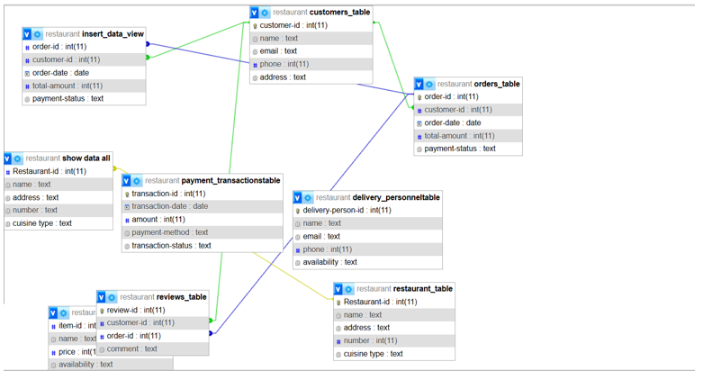
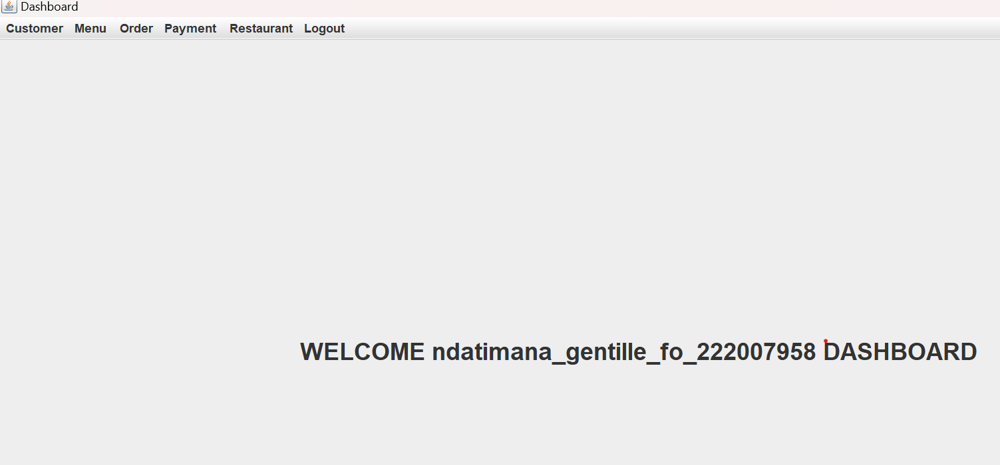
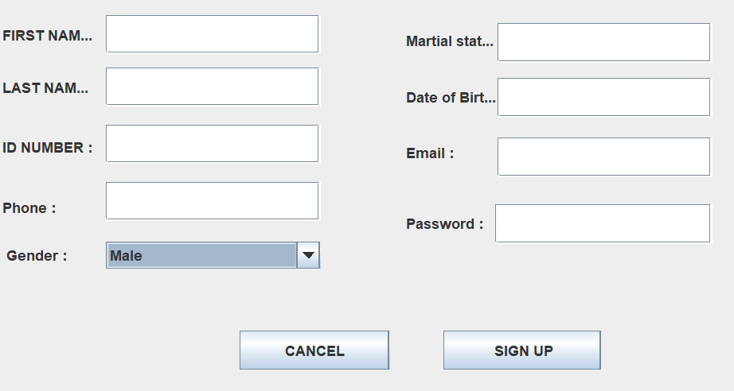

- I. DATABASE
Database name used: FOOD ORDERING System
- Tables
Customer table
customer table has the following attributes
payment table
payment table has the following attributes
Menu items table
Menu items table table has the following attributes
orders Table
restaurant table
- II. JAVA
II.1. Introduction
II.2.Tools used to develop this system in java programming
- MySQL Connectors
II.3. Forms description
So let look together how this system will function one by one from the beginning up to the end
1. customer foam
II.4. Conclusion
- Description
- Forms and Images
Customer database table

name (varchar)............................: name for customer
Email (varchar)..............................: Email for customer
phone(int)......................................: phone of customer
address(varchar).......................................: address of customer
payment database table

Id (primary key)......................................:Id for the payment
date (date)...............................:date of payment
amaunt(int).................................:amaunt of payment
method(varchar)......................................:method of payment
Menu items table table

Id (primary key)....................................: Id of of menu
price (int)..............................: price of menu
availability(varchar)...............................: menu availability
orders table has the following attributes
orders database table

Id (primary key)...................................: orders id
quantity(varchar)............................: orders quantity
item (varchar)..............................: orders item
restaurant table has the following attributes
restaurant database table

Id (primary key)......................................: Id of restaurant
name (varchar)..................................: name of restaurant
address (varchar)............................: address of restaurant
number (int)......................................: number of restaurant
An ERD of this system entities (Tables)

DATABASE AND JAVA OF FOOD ORDERING SYSTEM
In this chapter I will be describing how powerful general purpose programming language was used to create the analyzed system. Under this chapter I will undergo full detail of how everything will function together with database that have been describe above and how it cope with full analyzed system.
Eclipse IDE : An integrated development environment used in computer programming. It contains a base workspace and an extensible plug-in system for customizing the environment. It is the second-most-popular IDE for Java development, and, until 2016, was the most popular.
JAR stands for Java Archive : It's a file format based on the popular ZIP file format and is used for aggregating many files into one. Although JAR can be used as a general archiving tool, the primary motivation for its development was so that Java applets and their requisite components.
MySQL provides standards-based drivers for JDBC, ODBC, and Net enabling developers to build database applications in their language.
Under this page the system admin will INSERT, READ, UPDATE, AND DELETE customer, admin can INSERT customer who create account in system in order to allow his/ her to access system information and in order to allow his/ her to do same operations on system like view availability of foods and drinks and how much its costs etc. Admin also must READ customers who use system. He/she must also change user information when he/she UPDATE it. Admin must also delete user who is no longer needed to work with system.

2. orders foam
Under this page admin must also, INSERT, READ, UPDATE, DELETE orders according to the availability this make his/her to maintain customer orders.

3. payment Form
In this page admin must insert user payment in order help his/her to manage customer transactions and avoid losses of its. Admin also READ user payment in order to make sure if customer get something that are payed for. this help his/her to avoid loss in business, admin also UPDATE payment when customer who pays something before buys another. in order to reduce number of transactions. He/she must DELETE payments when pay day in order to reduce over files in system.

4. restaurant Form
In this page admin must INSERT restaurant in system in order to allow user to know what, restaurant may I make order, where restaurant located, and how restaurant operate this help customer to be aware restaurant he/she need to operate with. Admin also can READ, UPDATE, AND DELETE restaurant according to different reasons. When restaurant change Name, location or operation admin must have to UPDATE, and when restaurant closed the door admin must have to DELETE.

5. menu foam
Under this page admin must allow user to enter and see system availability, how costs after login. Admin also must insert menu according to availability, read menu in order to know how many is left this help his/her to avoid wrong comment to system user. Because when admin Reads on time he/she may be sure for foods and drinks that are available, this help restaurant to build good name to the custom because he/she order something and gain it on time. Admin must also update menu, according to the availability, he/she also delete menu at the end of the day in order to avoid confusion.

logout
After user login and make different orders and after getting satisfied he/she comment on restaurant services if its good he/she appreciate.
or if it’s bad he/she has freedom to write it in comment
in order to help admin to improve system operation until it become successful to the user.
So after comment on system services he/she must need to logout.
Logout button: this button is used by user or even Admin to get out of system after finishing his/her working on system.
When you click to this button you get two options. YES, or NO. if you click on yes you must logout of system but if you click NO you must not have to logout.
LOGIN FORM
Login: this button helps admin and user to login, in order to do different operations in system. Admin must allow user to create account for new user, and to login using Email and password for existing ones and can help ones who forget his/her password.

So, after admin gives a user permission to enter in the system he/she must riches to system dashboard then, he/ she must obtain all information needed on system dashboard. after entering to system dashboard you can see system foams. Like customer foam, menu foam, order foam, payment foam, restaurant foam.
create user account
And for the new system user who need to create account when he/she click to create account button, admin may ask his/her to fill the following foam.
By concluding, this chapter concerns with java programming especially in my developed system, I conclude that I have final product that I have expecting to have it. Admin/ user can manipulate data as I expect before in system engineering, And the design has wonderful appearance. And the system will work properly as I expected. There is no confusion on side of user and admin.